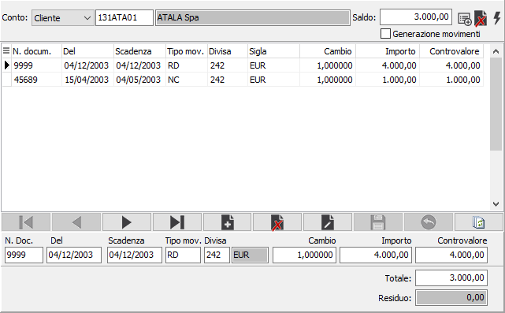
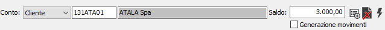
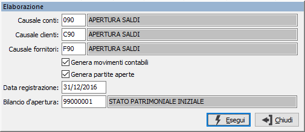
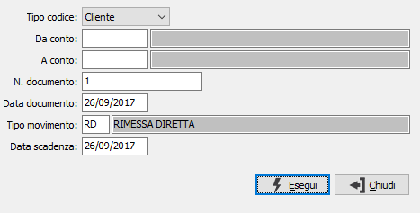
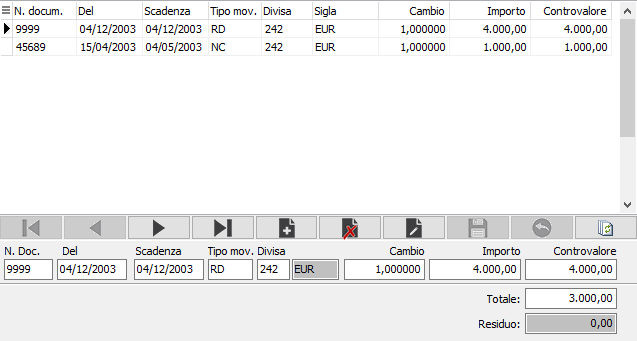

Ripresa saldi piano dei conti
La procedura consente di inserire i saldi dei singoli conti, clienti o fornitori, specificare eventuali scadenze associate e generare i movimenti di apertura e le scadenze in modo automatico. L'accesso iniziale mostra la finestra con gli eventuali saldi già presenti, suddivisa in due sezioni principali; la sezione superiore che contiene il saldo del conto e la sezione sottostante che contiene le eventuali informazioni relative ai documenti che compongono il saldo stesso.
E' possibile scorrere e stampare utilizzando gli appositi tasti della toolbar. Dal campo codice conto è possibile effettuare uno zoom (F9) sui conti che hanno già dei saldi inseriti. E' possibile modificare e cancellare un conto ed il relativo saldo, ma solo a particolari condizioni che sono elencate di seguito.

Saldo del conto

La parte superiore della finestra consente di specificare il codice del conto, cliente o fornitore, l'importo del saldo, i pulsanti per le operazioni da effettuare e l'indicazione di avvenuta generazione dei movimenti (Generazione movimenti con segno di spunta). Non è possibile modificare o cancellare saldi che abbiano già generato i movimenti o cancellare saldi che abbiano delle righe che specificano i documenti; sarà necessario eliminare i movimenti con l'apposito pulsante ed eventualmente cancellare le righe dei documenti per poter eliminare un saldo.
 Il pulsante consente di generare i movimenti contabili e le eventuali scadenze. Premendo il pulsante compare il menù a lato da cui è possibile decidere se la generazione deve essere eseguita per il saldo attivo o per tutti i saldi inseriti che ancora non abbiano generato movimenti; compare la seguente finestra:
Il pulsante consente di generare i movimenti contabili e le eventuali scadenze. Premendo il pulsante compare il menù a lato da cui è possibile decidere se la generazione deve essere eseguita per il saldo attivo o per tutti i saldi inseriti che ancora non abbiano generato movimenti; compare la seguente finestra:

CAUSALE CONTI: codice della causale contabile da utilizzare per generare i movimenti relativi all'apertura dei saldi dei sottoconti. Sul campo è attiva la funzione di ricerca (F9) sulla tabella stessa.
CAUSALE CLIENTI: codice della causale contabile da utilizzare per generare i movimenti relativi all'apertura dei saldi dei clienti. Sul campo è attiva la funzione di ricerca (F9) sulla tabella stessa.
CAUSALE FORNITORI: codice della causale contabile da utilizzare per generare i movimenti relativi all'apertura dei saldi dei fornitori. Sul campo è attiva la funzione di ricerca (F9) sulla tabella stessa.
GENERA MOVIMENTI CONTABILI: definisce se devono essere generati i movimenti contabili (casella con segno di spunta).
GENERA PARTITE: definisce se devono essere generate le partite aperte per i documenti inseriti in relazione ai saldi (casella con segno di spunta).
DATA REGISTRAZIONE: indicare la data da utilizzare come data di registrazione del movimento contabile.
BILANCIO D'APERTURA: codice del piano dei conti che sarà utilizzato come contropartita nei movimenti contabili che saranno generati. Sul campo è attiva la funzione di ricerca (F9) sulla tabella stessa.
 Il pulsante consente di eliminare i movimenti di saldo e le eventuali scadenze generate. Premendo il pulsante compare il menù a lato da cui è possibile decidere se l'eliminazione deve essere eseguita per il saldo attivo o per tutti i saldi inseriti che abbiano già generato dei movimenti.
Il pulsante consente di eliminare i movimenti di saldo e le eventuali scadenze generate. Premendo il pulsante compare il menù a lato da cui è possibile decidere se l'eliminazione deve essere eseguita per il saldo attivo o per tutti i saldi inseriti che abbiano già generato dei movimenti.
 Il pulsante consente di effettuare la registrazione in automatico di una riga di documenti per i conti per cui è già stato inserito un saldo, utilizzando l'importo del saldo stesso. Alla pressione del pulsante compare la seguente finestra:
Il pulsante consente di effettuare la registrazione in automatico di una riga di documenti per i conti per cui è già stato inserito un saldo, utilizzando l'importo del saldo stesso. Alla pressione del pulsante compare la seguente finestra:

TIPO CODICE: definisce se devono essere generati i documenti per i clienti o per i fornitori per cui sia già stato inserito un saldo.
DA CONTO: consente di specificare il codice del conto, in relazione al tipo codice inserito, da cui iniziare la generazione dei documenti. Se lasciato vuoto la generazione inizia dal primo conto valido per cui sia già stato inserito un saldo. Sul campo è attiva la funzione di ricerca (F9) sulla tabella stessa.
A CONTO: consente di specificare il codice del conto, in relazione al tipo codice inserito, con cui terminare la generazione dei documenti. Se lasciato vuoto la generazione termina con l'ultimo conto valido per cui sia già stato inserito un saldo. Sul campo è attiva la funzione di ricerca (F9) sulla tabella stessa.
N. DOCUMENTO: consente di specificare il numero del documento.
DATA DOCUMENTO: consente di specificare la data del documento.
TIPO MOVIMENTO: indicare il codice del tipo di movimento relativo alle scadenze da assegnare alla riga documento da generare. Sul campo è attiva la funzione di ricerca (F9) sulla tabella stessa.
DATA SCADENZA: consente di specificare la data di scadenza.
Documenti

La sezione documenti riporta gli eventuali documenti inseriti o generati a fronte del saldo del conto. E' possibile inserire, modificare o cancellare le righe purché il saldo non abbia già generato dei movimenti. Viene visualizzato anche il totale delle righe inserite ed i valore residuo in relazione all'importo del saldo del conto.
N. DOC.: consente di specificare il numero del documento.
DEL: consente di specificare la data del documento.
SCADENZA: consente di specificare la data di scadenza.
TIPO MOV.: indicare il codice del tipo di movimento relativo alle scadenze da utilizzare. Sul campo è attiva la funzione di ricerca (F9) sulla tabella stessa.
DIVISA: indicare la divisa del documento. Sul campo è attiva la funzione di ricerca (F9) sulla tabella stessa.
CAMBIO: indicare il cambio in relazione alla divisa inserita.
IMPORTO: indicare l'importo, in divisa, del documento.
CONTROVALORE: viene riportato in automatico il controvalore dell'importo in divisa al cambio inserito.